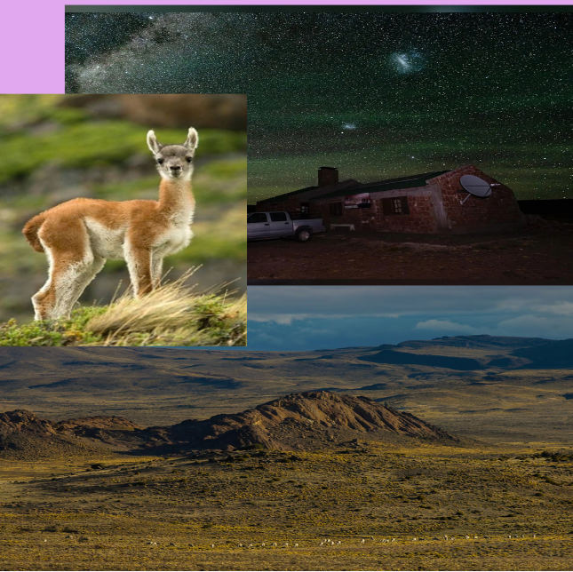

La gente mira la meseta y piensa que no hay nada, que solo es viento y tierra, pero si miramos más allá de eso, hay vida en cada rincón de la meseta. Por eso es que debemos cuidarla y conservarla.

Porque en ella hay animales y plantas que solo crecen ahí, personas, y uno de los cielos estrellados más lindos porque no están contaminados por luz eléctrica.
Pero para poder cuidarla primero hay que entender qué tiene y por qué es tan importante.
Por eso las cosas que debemos tener en cuenta para cuidarla son:
- No a la contaminación lumínica innecesaria.
- No a la caza furtiva de animales.
- No a la contaminación por basura.
Si no tiramos basura y no se caza de manera irresponsable, la belleza de la meseta se conservará, pero si hacemos lo contrario esa belleza irá desapareciendo hasta no quedar nada.
En la meseta viven diversos tipos de animales como el guanaco, puma, gato montés, lagartijas. También hay plantas como el coirón que resisten a pesar del viento, el frío y la escasez de agua.
Además de eso, en ella vive gente que trabaja con la ganadería, mayormente ovina.
En la noche la meseta tiene uno de los cielos más lindos porque al no estar contaminado por luces se ven claramente las estrellas en su mayor esplendor.